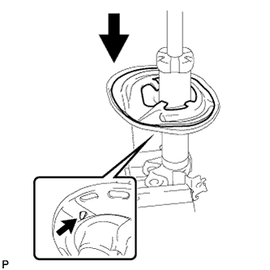
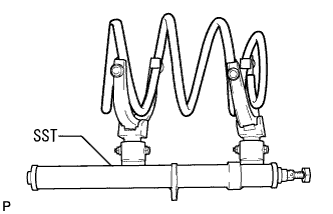
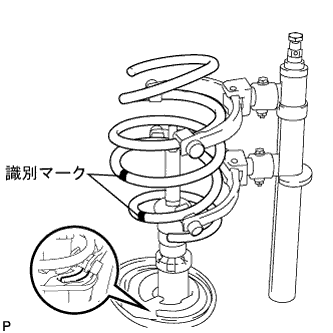

Front Shock Absorber w/ Coil Spring Reassembly |
| 1. Secure Front Shock Absorber Assembly LH |
 |
Install the bolt and nut to the front shock absorber assembly LH as shown in the illustration, and secure it in a vise.
| 2. Install Front Coil Spring Insulator Lower LH |
 |
Install the front coil spring insulator lower LH.
| 3. Install Front Spring Bumper LH |
| 4. Install Front Coil Spring LH |
 |
Install SST to the coil spring so that the distance between the upper and lower hooks of SST is at its widest.
Using SST, compress the front coil spring LH.
 |
Install the front coil spring LH.
| 5. Install Front Coil Spring Insulator Upper LH |
| 6. Install Front Coil Spring Seat Upper LH |
| 7. Install Front Suspension Support Dust Seal LH |
Install a new front suspension support dust seal LH.
| 8. Install Front Suspension Support Sub-assembly LH |
| 9. Temporarily Tighten Front Support to Front Shock Absorber Nut |
Temporarily tighten a new front suspension support to front shock absorber nut LH to the front shock absorber assembly LH.
Release SST and remove SST from the coil spring.